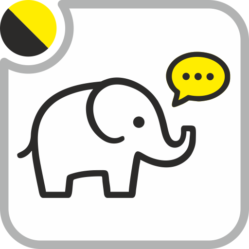

In-Odoo conversational assistant. Owns the chat; the AI Engine owns inference, tools and knowledge.
Chatboo app or the systray overlay — sessions and the conversation. This module has no Settings page and no Technical menu for keys.
Provider key and failover: AI Engine app → agent
pns_ai_chatboo. Map keys: Geo → Settings
(or Settings → Geo), not here.
A product UI on top of pns_ai_mcp. It is
the backend app plus the systray overlay: sessions, turn history and
SSE streaming on the screen the user already has open. All providers,
skills, Safe Plan and the MCP protocol stay in the engine. Chatboo
does not re-implement them.
You can run the engine without Chatboo (Cursor talking MCP only). You
cannot run Chatboo without the engine. Customer packs such as
occ_custom_ai seed knowledge into the engine; Chatboo
just talks through the agent named pns_ai_chatboo.
pns_ai_chatboo. Failover, model and tools are on that agent.pns_ai_mcp directly. This module is the in-Odoo conversation, not a second server.occ_custom_ai. Chatboo will use them once the engine has them.httpx, pydantic; on Odoo 14 also openpyxl>=3.1.2). Then install pns_base and pns_ai_mcp. Paste at least one provider API key in the AI Engine app.pns_ai_chatboo. Set the primary provider and the failover order you want for in-Odoo chat.pns_geo and put the map keys under Settings → Geo. Chatboo will not ask for those keys.occ_custom_ai so Occidente skills seed into the engine. Restart the conversation after that upgrade.| Module | Where | Role |
|---|---|---|
pns_ai_mcp |
O14 and O19 | Engine: providers, skills, MCP, Safe Plan |
pns_ai_chatboo |
O14 and O19 | This UI: sessions, overlay, streaming |
occ_custom_ai |
O14 and O19 | Optional pilot pack. Seeds the engine; Chatboo does not depend on it. |
UI source in English. Layout: common/ plus OWL1 (O13–14) and OWL2 (O15–19+) stacks.
PATANEGRA Soft — Apache License 2.0 (OSI approved). See LICENSE.